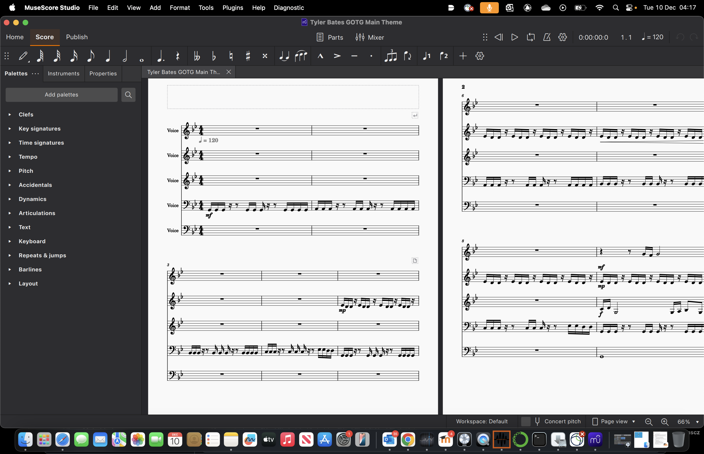
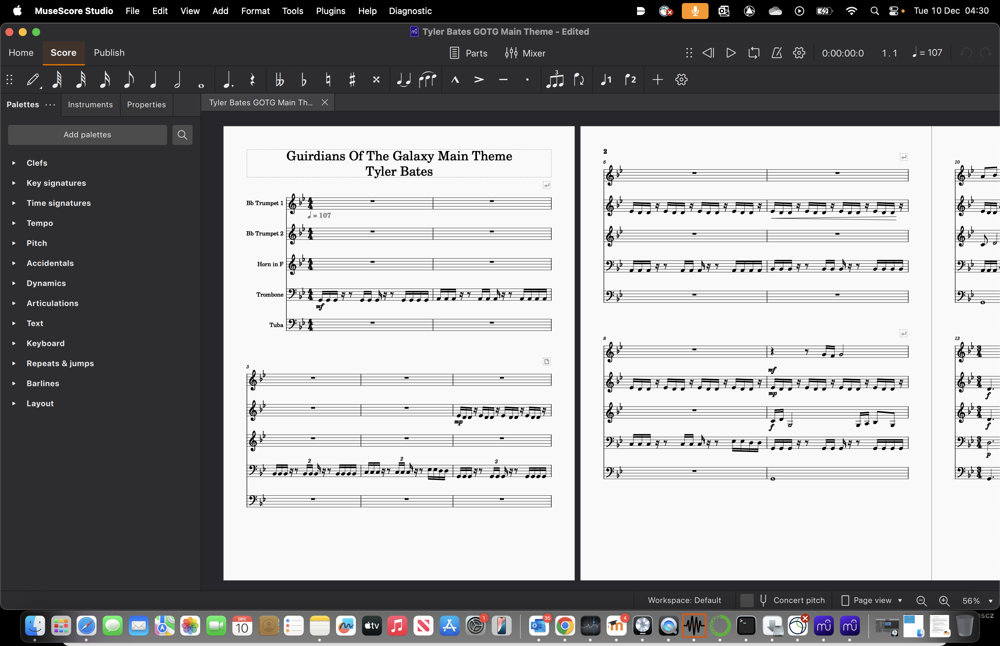
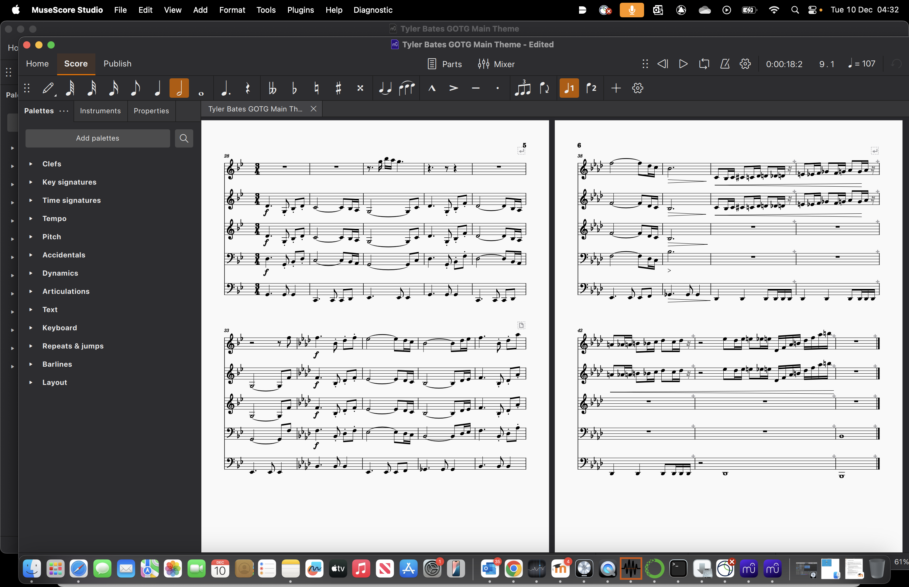

Music Analytic’s
Guardians of the galaxy main theme score by Tyler Bates PDF converted to an mscz file for use in Musescore.
Areas where Musescore failed:
Tempo assumed to be 120BPM when the correct tempo was actually 107BPM according to the sheet notation original PDF.
Instruments all labeled as voices when they were actually 5 separate instruments.

9th staff bar 1 after the triplet we have a duplet and a semi quaver, Musescore has changed this into 3 semi quavers. It has done the same on bar 2 and 3 on the 9th staff
Staff 21 - 25 missing time signature 2/4 on Musescore, Should be present in Bar 3
Staff 36-40 also missing key signature on bar 3, musescore not presenting the 2/4 again.
Staff 39 the dynamic of crescendo hairpin is only covering the dotted quaver in musescore when on the original it covers the quaver and dotted duplet.
46-50 we are missing key signatures Missing Ab major or F minor on Musescore.
As a result of replacing in the correct key signature, many notes were automatically given accidentals ie Sharps.
51-55 staff have incorrect crescendo hairpins on bar 2 in Musescore.
Final section we have an extra bar of rests added by Musescore, a missing time signature of 4/4, missing crescendo.
Having trouble removing added rests and replacing with 4/4 signature but want to keep only three bars and prevent notes from shifting…
Example of some edited score using musescore:

